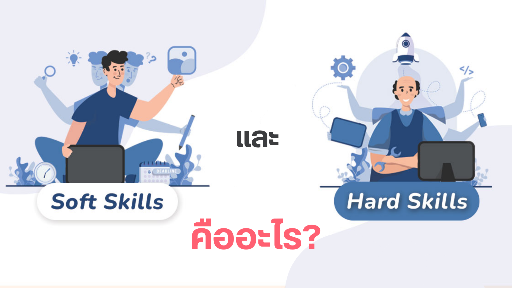
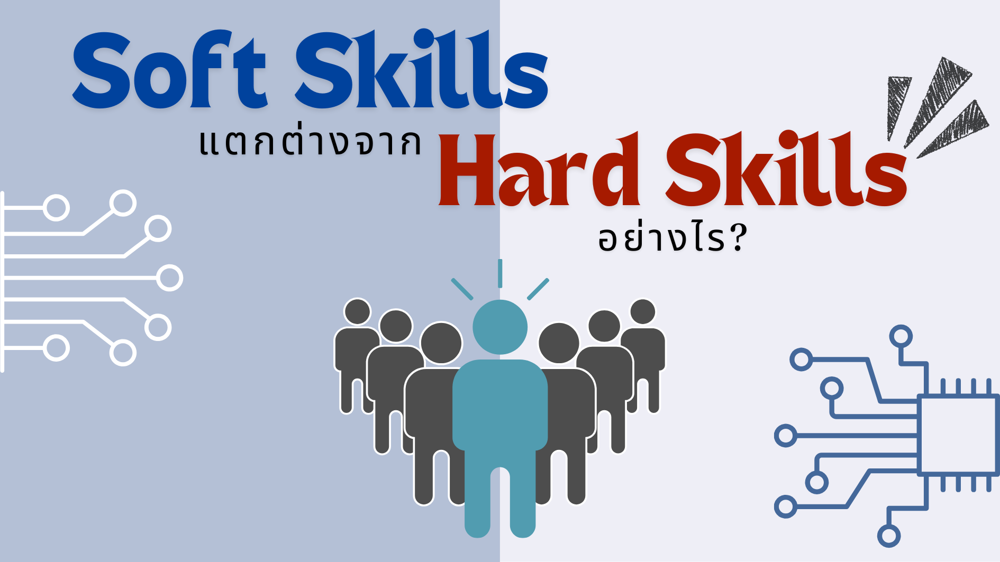
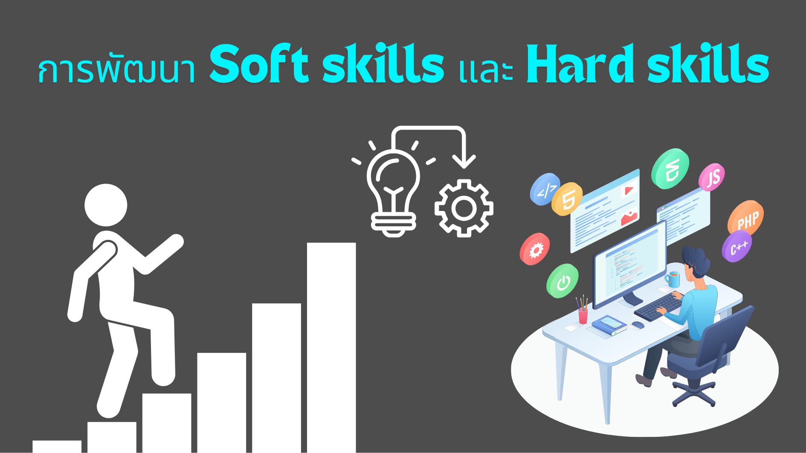

Soft Skills & Hard Skills
Soft Skills และ Hard Skills คืออะไร?
ในยุคปัจจุบันที่เทคโนโลยีพัฒนาอย่างรวดเร็ว การเปลี่ยนแปลงของตลาดแรงงานก็เกิดขึ้นอย่างรวดเร็วเช่นกัน ส่งผลให้ทักษะที่จำเป็นในการทำงานเปลี่ยนแปลงตามไปด้วย ซึ่ง Hard Skills และ Soft Skills คือทักษะที่จำเป็นสำหรับการทำงานและเป็นทักษะที่ต้องการของตลาดแรงงานโลกเนื่องจากองค์กรต่าง ๆ ต้องการพนักงานที่มีทั้ง Soft Skills และ Hard Skills เพื่อช่วยให้องค์กรสามารถปรับตัวและประสบความสำเร็จในการแข่งขัน
Soft Skills คืออะไร?
ทักษะทางด้านอารมณ์ที่เป็นลักษณะอุปนิสัย และความสามารถเชิงสมรรถนะ ที่จะเป็นตัวช่วยให้คุณสามารถที่จะทำงานร่วมกับผู้อื่นได้เป็นอย่างดี พร้อมทั้งการมีปฏิสัมพันธ์ที่ดีกับเพื่อนร่วมงานและการสื่อสารได้อย่างมีประสิทธิภาพ ซึ่งเป็นทักษะที่หุ่นยนต์ไม่สามารถที่จะทำแทนได้
Hard Skills คืออะไร?
ทักษะทางด้านวิชาชีพที่จะต้องใช้ความรู้รวมไปถึงการมีทักษะที่แต่ละองค์กรนั้นต้องการ ผ่านการเรียนรู้และการสั่งสมประสบการณ์ต่าง ๆ เพื่อนำไปใช้ในการทำงานได้อย่างชำนาญและมีประสิทธิภาพได้มากที่สุด ไม่ว่าจะเป็นการอ่าน การเขียน การใช้โปรแกรม รวมไปถึงการใช้เครื่องมือต่าง ๆ ที่เกี่ยวข้องกับสายอาชีพ ล้วนแล้วแต่เป็น Hard Skills ที่จำเป็นจะต้องมีทั้งสิ้น
Soft Skills และ Hard Skills แตกต่างกันอย่างไร?
ความแตกต่างระหว่าง Soft Skills และ Hard Skills เห็นได้อย่างชัดเจน เพราะทั้ง 2 อย่างนี้เรียกได้ว่าอาจอยู่คนละขั้วของการทำงานเลยก็ว่าได้ แต่ทั้ง 2 อย่างนี้ควรมีร่วมกันระหว่างการทำงาน เพราะหากพนักงานในองค์กรมีเพียงแค่ Soft Skills แต่ไม่มีทักษะ Hard Skills ก็จะไม่สามารถทำงานในด้านวิชาการอันเกี่ยวกับตำแหน่งงาน หรือความรู้เจาะลึกในงานนั้น ๆ ได้อย่างแน่นอน หรือหากพนักงานคนนั้นมีแต่ Hard Skills แต่ไม่มี Soft Skills ก็เปรียบเสมือนคนที่ทำงานอย่างไร้หัวใจ มีเพียงแค่ความรู้ที่เกี่ยวกับทักษะการทำงานเพียงอย่างเดียวเท่านั้น แต่ไม่มีมนุษยสัมพันธ์หรือทักษะที่เกี่ยวเนื่องกับการทำงานร่วมกับผู้อื่นเลย ซึ่งการทำงานร่วมกับผู้อื่น รวมไปถึงความคิดสร้างสรรค์หรือทักษะต่าง ๆ ที่อยู่ในองค์ประกอบของ Soft Skills ล้วนเป็นสิ่งสำคัญที่ช่วยให้องค์กรขับเคลื่อนร่วมกันได้ทั้งหมด เพราะแน่นอนอยู่แล้วว่าองค์กรใดองค์กรหนึ่ง คงไม่สามารถทำงานให้สำเร็จลุล่วงทุกขั้นตอนทั้งหมดภายในคน ๆ เดียวได้แน่ ๆ
ดังนั้นเมื่อพนักงานทุกคนต้องทำงานร่วมกัน ทุกคนจึงจำเป็นต้องมีทั้ง 2 ทักษะในเวลาเดียวกัน ซึ่งความแตกต่างระหว่าง Soft Skills และ Hard Skills สามารถแบ่งออกเป็นข้อ ๆ เพื่อให้เห็นภาพได้ชัดเจนยิ่งขึ้น ดังนี้
- Soft Skills คือความคิดสร้างสรรค์ แต่ Hard Skills คือความรู้วิชาการของการทำงานในกระบวนการนั้น ๆ โดยตรง
- Soft Skills คือการทำงานร่วมกับผู้อื่น แต่ Hard Skills คือการบริหารจัดการคนในองค์กร
- Soft Skills คือการใช้ประสบการณ์หรือความรู้สึกในการวิเคราะห์ แต่ Hard Skills คือการใช้กระบวนการวิเคราะห์เชิงตรรกะ ซึ่งไม่ใช่เพียงแค่การใช้ประสบการณ์ในการคิดวิเคราะห์เท่านั้น เพราะจะต้องมีความรู้ด้านวิชาการมารองรับเป็นเหตุและผลให้สอดคล้องกันด้วย
จากความแตกต่างที่กล่าวมา จะเห็นได้ว่าระหว่าง Soft Skills และ Hard Skills มีความแตกต่างกันอย่างเห็นได้ชัด แต่ทั้งสองอย่างควรจะต้องมีร่วมกัน เพื่อให้การทำงานสำเร็จลุล่วงไปได้ด้วยดี ที่สำคัญพนักงานมีความสุขในการทำงานร่วมกัน องค์กรก็มีความสุขจากผลสัมฤทธิ์ของการทำงานไปด้วย แต่แม้ทั้งสองอย่างจะอยู่กันคนละฝั่งก็ตาม แต่หากมองอย่างละเอียดแล้ว ถือว่าทั้ง Soft Skills และ Hard Skills ต่างก็เป็นหนึ่งในปัจจัยที่ส่งผลให้กระบวนการทำงานสำเร็จนั่นเอง
การพัฒนา Soft Skills และ Hard Skills
ทั้ง Soft Skills และ Hard Skills ต่างก็มีความสำคัญต่อการทำงานและประสบความสำเร็จในอาชีพการงาน การพัฒนาทั้ง Soft Skills และ Hard Skills จะช่วยให้สามารถทำงานได้อย่างมีประสิทธิภาพและบรรลุเป้าหมายได้
การพัฒนา Soft Skills
Soft Skills เป็นทักษะทางอารมณ์และสังคมที่ไม่สามารถวัดหรือประเมินได้อย่างชัดเจน การพัฒนา Soft Skills จึงต้องอาศัยการฝึกฝนอย่างสม่ำเสมอและประสบการณ์จากสถานการณ์จริง แนวทางการพัฒนา Soft Skills มีดังนี้
- การตั้งเป้าหมาย การตั้งเป้าหมายจะช่วยให้สามารถวัดความก้าวหน้าในการพัฒนาทักษะได้ ตัวอย่างเช่น ตั้งเป้าหมายว่าจะต้องพัฒนาทักษะการสื่อสารให้ดีขึ้นภายใน 6 เดือน
- การฝึกฝน การฝึกฝนเป็นวิธีที่ดีที่สุดในการพัฒนาทักษะใด ๆ ตัวอย่างเช่น ฝึกฝนการพูดในที่สาธารณะ ฝึกฝนการเขียนอีเมลหรือจดหมาย ฝึกฝนการแก้ปัญหาความขัดแย้ง เป็นต้น
- การขอคำแนะนำ การขอคำแนะนำจากผู้อื่นที่มีประสบการณ์สามารถช่วยให้พัฒนาทักษะได้อย่างรวดเร็ว ตัวอย่างเช่น ปรึกษาเพื่อนร่วมงานที่เก่งด้านการสื่อสาร ปรึกษาหัวหน้างานเกี่ยวกับทักษะการทำงานเป็นทีม เป็นต้น
ตัวอย่างการพัฒนา Soft Skills
- การสื่อสาร ฝึกฝนการพูดในที่สาธารณะ ฝึกฝนการเขียนอีเมลหรือจดหมาย ฝึกฝนการนำเสนองาน เป็นต้น
- การทำงานเป็นทีม เข้าร่วมกิจกรรมกลุ่ม สมัครเข้าร่วมโครงการหรือกิจกรรมที่ต้องใช้การทำงานเป็นทีม เป็นต้น
- การแก้ปัญหา หากิจกรรมหรืองานที่ต้องอาศัยการแก้ปัญหา ฝึกฝนการคิดเชิงวิเคราะห์ เป็นต้น
- ความคิดสร้างสรรค์ หากิจกรรมหรืองานที่ต้องอาศัยความคิดสร้างสรรค์ ฝึกฝนการคิดนอกกรอบ เป็นต้น
- การปรับตัว หาประสบการณ์ใหม่ ๆ ท้าทายตัวเองให้ต้องปรับตัว เป็นต้น
- การบริหารความขัดแย้ง หากิจกรรมหรืองานที่ต้องอาศัยการแก้ไขปัญหาความขัดแย้ง ฝึกฝนการฟังอย่างเข้าใจ ฝึกฝนการหาจุดร่วม เป็นต้น
- การโน้มน้าวใจ ฝึกฝนการพูดในที่สาธารณะ ฝึกฝนการนำเสนองาน เป็นต้น
- การจัดการเวลา วางแผนการทำงาน ตั้งเป้าหมายและกำหนด deadlines เป็นต้น
- ภาวะผู้นำ เข้าร่วมกิจกรรมหรืองานที่ต้องอาศัยการเป็นผู้ lead ฝึกฝนทักษะการเป็นผู้นำ เป็นต้น
การพัฒนา Hard Skills
Hard Skills เป็นทักษะทางเทคนิคหรือความรู้เฉพาะทางที่เกี่ยวข้องกับงาน การพัฒนา Hard Skills จึงต้องอาศัยการฝึกฝนอย่างสม่ำเสมอและประสบการณ์จากการทำงาน แนวทางการพัฒนา Hard Skills มีดังนี้
- การศึกษาหาความรู้ ศึกษาจากตำรา เอกสาร หรือแหล่งข้อมูลอื่น ๆ ที่เกี่ยวข้องกับทักษะที่ต้องการพัฒนา
- การฝึกฝน ฝึกฝนทักษะต่าง ๆ ที่เกี่ยวข้องกับงาน ตัวอย่างเช่น ฝึกฝนการใช้โปรแกรมคอมพิวเตอร์ ฝึกฝนทักษะด้านการเงิน เป็นต้น
- การทำงานจริง ประสบการณ์จากการทำงานจริงจะช่วยให้พัฒนาทักษะได้อย่างรวดเร็ว ตัวอย่างเช่น ฝึกฝนทักษะการทำงานร่วมกับผู้อื่น ฝึกฝนทักษะการแก้ปัญหา เป็นต้น
ตัวอย่างการพัฒนา Hard Skills
- ทักษะการใช้คอมพิวเตอร์ ศึกษาจากตำรา เอกสาร หรือแหล่งข้อมูลอื่น ๆ ที่เกี่ยวข้องกับทักษะการใช้คอมพิวเตอร์ ฝึกฝนการใช้โปรแกรมคอมพิวเตอร์ต่าง ๆ ที่จำเป็นต่องาน
- ทักษะการใช้ภาษา ศึกษาจากตำรา เอกสาร หรือแหล่งข้อมูลอื่น ๆ ที่เกี่ยวข้องกับทักษะการใช้ภาษา ฝึกฝนการเขียนและพูดภาษาต่าง ๆ ที่จำเป็นต่องาน
- ทักษะด้านการเงิน ศึกษาจากตำรา เอกสาร หรือแหล่งข้อมูลอื่น ๆ ที่เกี่ยวข้องกับทักษะด้านการเงิน ฝึกฝนการคำนวณทางการเงินต่าง ๆ ที่จำเป็นต่องาน
- ทักษะด้านการตลาด ศึกษาจากตำรา เอกสาร หรือแหล่งข้อมูลอื่น ๆ ที่เกี่ยวข้องกับทักษะด้านการตลาด ฝึกฝนการวิเคราะห์ข้อมูลการตลาด ฝึกฝนการเขียนเนื้อหาทางการตลาด เป็นต้น
- ทักษะด้านกฎหมาย ศึกษาจากตำรา เอกสาร หรือแหล่งข้อมูลอื่น ๆ ที่เกี่ยวข้องกับทักษะด้านกฎหมาย ฝึกฝนการอ่านและวิเคราะห์เอกสารทางกฎหมาย เป็นต้น
- ทักษะด้านวิศวกรรม ศึกษาจากตำรา เอกสาร หรือแหล่งข้อมูลอื่น ๆ ที่เกี่ยวข้องกับทักษะด้านวิศวกรรม ฝึกฝนการใช้เครื่องมือและอุปกรณ์ทางวิศวกรรม เป็นต้น
- ทักษะด้านการแพทย์ ศึกษาจากตำรา เอกสาร หรือแหล่งข้อมูลอื่น ๆ ที่เกี่ยวข้องกับทักษะด้านการแพทย์ ฝึกฝนการวินิจฉัยโรค ฝึกฝนการรักษาโรค เป็นต้น
- ทักษะด้านการออกแบบ ศึกษาจากตำรา เอกสาร หรือแหล่งข้อมูลอื่น ๆ ที่เกี่ยวข้องกับทักษะด้านการออกแบบ ฝึกฝนการใช้โปรแกรมออกแบบ เป็นต้น
12 Soft Skills ที่จำเป็นต่อการทำงานในโลกยุคดิจิทัล
ในยุคดิจิทัลมีนวัตกรรมและเทคโนโลยีใหม่เกิดขึ้นมากมายที่เข้ามาช่วยให้ ทั้งการทำงานและการใช้ชีวิตประจำวันให้สะดวกสบายมากยิ่งขึ้น จนกลายเป็นส่วนหนึ่งที่เราเริ่มขาดไปไม่ได้โดยไม่รู้ตัว เข้ามาเป็นเครื่องมือช่วยทุ่นแรงบ้าง ช่วยลดระยะเวลาในการทำงานแบบเดิม รวมถึงช่วยยกระดับการทำงานให้มีประสิทธิภาพมากขึ้น
แต่หารู้ไม่ว่าเทคโนโลยีเหล่านี้ได้เข้ามาทดแทนความต้องการ Hard Skills ต่าง ๆ จนทำให้อาชีพบางอย่างหายไป และอีกไม่นานอีกหลายอาชีพจะถูกทดแทนด้วยเทคโนโลยี ด้วยเหตุผลเหล่านี้เองหากเรายังไม่มีข้อได้เปรียบมากกว่าเทคโนโลยีที่ถูกพัฒนาขึ้นอยู่ทุกวัน คงเป็นไปได้ยากที่เราจะอยู่รอดในการแข่งขันเพียง Hard Skills อย่างเดียว
โดย Hard Skills หรือทักษะทางอาชีพที่ได้มาจากการเรียนรู้ด้านทฤษฎีและเทคนิคต่าง ๆ เพื่อใช้ในการทำงานที่สามารถถ่ายทอดความรู้ได้ และที่สำคัญระดับความรู้ของทักษะทางอาชีพสามารถวัดผลได้ ซึ่งต่างจาก Soft Skills ที่ถูกพัฒนามาจากประสบการณ์และการลงมือทำ
Soft Skills จึงกลายเป็นความได้เปรียบของคนเรา เป็นจุดแข็งอย่างเป็นสิ่งเดียวที่เทคโนโลยีในปัจจุบันยังไม่สามารถเรียนรู้และเข้ามาทดแทนได้อย่างสมบูรณ์ หากเปรียบว่า Hard Skills เป็นเหมือนใบเบิกทาง แต่ Soft Skills นั้นจะช่วยเพิ่มโอกาสไปสู่ความสำเร็จให้เรามากยิ่งขึ้น
ในบทความนี้ เราได้รวบรวม 12 Soft Skills ที่จำเป็นในการทำงานยุคดิจิทัลที่ทุกอย่างรวดเร็วไปหมด โดย Soft Skills เหล่านี้ จะช่วยให้เราสามารถรับมือกับอุปสรรคแม้จะยากแค่ไหนก็จัดการได้อย่างเฉียบขาด
1. Communication : ทักษะการสื่อสาร
เคยไหมบางทียังฟังไม่ทันจบก็ด่วนสรุปเอาเอง ไม่ตั้งใจฟังเท่าไหร่เหม่อลอยไม่ได้อยู่กับคำพูด หรือบางทียังฟังไม่ได้ศัพท์ ก็จับไปกระเดียดซะงั้น จนผลลัพธ์ที่ตามมาทำให้เราอยากจะย้อนเวลากลับไปตั้งใจฟังใหม่ให้ดี
นอกจากการฟังก็ยังมีทั้งพูด อ่าน และเขียน ดังนั้นทักษะการสื่อสารไม่ได้จำกัดเฉพาะอาชีพการทำงานที่ต้องนำเสนอขาย หรืองานบริการเท่านั้น หากลองสังเกตเราแทบจะใช้ทักษะเหล่านี้ตลอดเวลา ไม่ว่าจะพูดคุยกับคนรอบข้าง ตอบข้อความหรืออีเมล นำเสนอผลงาน และในที่ประชุม ซึ่งการสื่อสารที่มีประสิทธิภาพจะช่วยลดข้อผิดพลาดที่เกิดขึ้น ทำให้การสื่อสารกระชับและเข้าใจสิ่งที่สื่อเร็วขึ้น รวมถึงการมีวาทศิลป์จะช่วยให้คู่สนทนาประทับใจในตัวคุณมากขึ้นอีกด้วย
อยากเริ่มต้นสร้างทักษะการสื่อสารให้ดี ควรทำอย่างไรบ้าง?
เริ่มจากฝึกเรียงลำดับโครงสร้างการเล่าเรื่อง
- เน้นใจความสำคัญของเรื่องที่อยากจะสื่อ
- ใช้ภาษาหรือคำพูดที่เข้าใจง่าย
- หากจำเป็นต้องต้องเน้นส่วนสำคัญลองใช้ท่าทางประกอบการอธิบายที่พอดีไม่มากเกินไป
- เลือกใช้ระดับภาษาที่เหมาะสมกับคู่สนทนาหรือผู้ฟัง
- ตั้งใจรับฟังอย่างเปิดใจและไม่อคติ
- จับใจความสำคัญของผู้พูด
2. Time Management : ทักษะการบริหารจัดการเวลา
แม้เราจะมี 24 ชั่วโมงต่อวันเท่ากันทุกคน แต่เคยรู้สึกว่าใช้เวลาไปอย่างสูญเปล่า หรือไม่เป็นอย่างที่คิดไหม? ชอบผัดวันประกันพรุ่ง เก็บไว้ก่อน เดี๋ยวค่อยทำใกล้ ๆ จนรู้ตัวอีกทีก็จะหมดเวลาต้องรีบปั่นงานแบบไฟไหม้
ยิ่งการแข่งขันที่รุนแรงต้องแข่งกับเวลามากขึ้นจนอยากจะขอซื้อเวลาเพิ่ม ไม่ว่าอาชีพไหนก็ต้องมีกำหนดเวลาที่เป็นเส้นตาย งานบางงานที่เป็นงานต่อเนื่องที่ต้องส่งต่อให้กับเพื่อนร่วมงาน ซึ่งถ้าหากล่าช้าไปจะส่งผลกระทบต่อเวลาส่งมอบงานจนต้องเลื่อนออกไป หรือกินระยะเวลาการทำงานของคนอื่นเป็นเรื่องที่ไม่ดีเอาเสียเลย
ดังนั้นทักษะการบริหารเวลาจึงสำคัญอย่างมาก เพื่อเป้าหมายสำเร็จในระยะเวลาที่กำหนด
การวางแผนบริการจัดการเวลาอย่างเหมาะสมจึงเป็นเรื่องที่สำคัญมากทั้งเรื่องงาน เรื่องเรียน หรือเรื่องส่วนตัว ต่างก็มีสิ่งที่ต้องสะสางให้สำเร็จลุล่วง หากวางแผนจนเป็นนิสัยได้จะเห็นผลลัพธ์ว่าจริง ๆ แล้วเรายังมีเวลาว่างเหลือไปทำอย่างอื่นที่สนใจอีกเยอะ
อยากเริ่มต้นสร้างทักษะการบริหารจัดการที่ดี ควรทำอย่างไรบ้าง?
- เริ่มวางแผนเรียงลำดับความสำคัญหรือความเร่งด่วนของสิ่งที่ต้องทำ
- กำหนดระยะเวลาที่มีความเป็นไปได้ที่จะทำให้สำเร็จในช่วงเวลาที่วางไว้
- กำหนดเป้าหมาย หรือ To-do list เป็นรายวัน รายอาทิตย์ รายเดือน หรือสิ่งที่ต้องทำให้สำเร็จในปีนี้
- หมั่นทำให้สำเร็จจนเป็นนิสัย มีความสม่ำเสมอ และต่อเนื่อง
3. Flexibility and Adaptability : ทักษะความยืดหยุ่นและปรับตัว
แต่ก่อนการเปลี่ยนแปลงใหญ่ ๆ 10 ปีจะมีหน ทำให้ความคิดที่จะปรับตัวเข้ากับสิ่งใหม่ไม่ได้ยากมากนัก ในปัจจุบันกลับเรียกได้ว่ายิ่งเทคโนโลยีเจริญขึ้นเท่าไหร่ เราก็ต้องปรับตัวและก้าวให้ทันเท่านั้น
ไม่ใช่แค่เทคโนโลยีเพียงอย่างเดียว เราแทบจะต้องปรับตัวอยู่ตลอดจากปัจจัยด้านสภาพแวดล้อม ไม่ว่าจะเป็นปรับตัวเข้ากับสังคม รับมือกับสถานการณ์เฉพาะหน้า หรือเวลาทำงานอยู่แล้วมีงานเร่งด่วนเข้ามาแทรก ดังนั้นทักษะความยืดหยุ่นและปรับตัวจะเป็นเหมือนตัวช่วยให้เราเข้ากับความแปลกใหม่ หรือเผชิญหน้ากับการเปลี่ยนแปลงได้ มีความคิดและการกระทำที่ยืดหยุ่นพร้อมปรับตัวให้ทันต่อสถานการณ์ กฎเกณฑ์ หรือวิธีการทำงาน
อยากเริ่มต้นสร้างทักษะความยืดหยุ่นและปรับตัว ควรทำอย่างไรบ้าง?
- เริ่มจากสังเกตบรรยากาศรอบตัว ท่าทาง น้ำเสียงของคนรอบข้าง
- ปรับเปลี่ยนมุมมองความคิดที่จะแก้ไข
- เปิดใจเรียนรู้สิ่งใหม่ ไม่ปิดกั้นตัวเองที่จะเปลี่ยนแปลง
- เมื่อเผชิญปัญหาสามารถยอมรับความเสี่ยงและผลลัพธ์ที่เกิดขึ้นแล้วนำไปปรับใช้ในครั้งหน้า
4. Teamwork and Collaboration : ทักษะการทำงานร่วมกับผู้อื่น
หากเปรียบการทำงานร่วมกันกับผู้อื่นเป็นทีมฟุตบอล คงเป็นไปไม่ได้เลยที่จะเอาชนะคู่แข่งโดยต่างคนต่างเล่นไม่สนใจคนในทีม แต่หากผู้เล่นทุกคนคอยสนับสนุน ส่งเสริม และร่วมแรงร่วมใจ เพื่อที่จะเอาชนะคู่แข่งเหมือนกัน ความน่าจะเป็นที่จะชนะก็จะเพิ่มขึ้น
การทำงานเป็นทีมเราคงผ่านกันมานับครั้งไม่ถ้วน ตั้งแต่เล็กจนโตมีโครงงานบ้าง งานวิจัยกลุ่มบ้าง เจอทั้งปัญหาหลายอย่าง เช่น งานไม่เดิน เข้าใจภาพรวมไม่ตรงกัน ขัดแย้งทางความคิดเห็น และแม้จะเข้าสู่วัยทำงานก็ยังจำเป็นต้องทำงานร่วมกับผู้อื่น เช่น เพื่อนร่วมงาน ลูกน้อง หัวหน้า หรือแม้แต่กับลูกค้า แทบจะหลีกเลี่ยงสิ่งเหล่านี้ไม่ได้เลย
ทักษะการทำงานร่วมกับผู้อื่นจึงเป็นสิ่งสำคัญที่ช่วยขับเคลื่อนเป้าหมายร่วมกันให้ลุล่วง การทำงานเป็นทีมมีข้อดีมากมาย ทั้งได้แชร์ความคิดเห็น ได้ไอเดียและมุมมองความคิดใหม่ ๆ และยังสามารถจัดการงานนั้นได้อย่างรวดเร็ว
อยากเริ่มต้นสร้างทักษะการทำงานร่วมกับผู้อื่น ควรทำอย่างไรบ้าง?
- เริ่มจากวางเป้าหมายที่ชัดเจนร่วมกัน
- ระดมความคิดหาวิธีการที่จะนำไปสู่เป้าหมายนั้น
- กล้าที่จะนำเสนอไอเดียของตนเอง
- หากความคิดของคนในทีมแตกต่าง ผิดจากเป้าหมาย หรือคิดว่าไม่น่าทำได้ ควรสอบถามหาเหตุผล และพูดคุยอย่างเปิดใจ
- ช่วยเหลือเกื้อกูล พัฒนา และแบ่งปันความรู้หรือกระบวนการคิดร่วมกัน
- ลงมือทำส่วนที่ได้รับมอบหมายอย่างเต็มที่
5. Analytic and Critical Thinking : ทักษะการคิดเชิงวิเคราะห์และเชิงวิพากษ์
แม้ว่าในปัจจุบันการเข้าถึงข้อมูลต่าง ๆ ทำได้ง่ายและรวดเร็วมากขึ้น ไม่ว่าจะเป็นบนโซเชียลมีเดียแพลตฟอร์มอย่าง Facebook Instagram และ Twitter ก็มีข้อมูลข่าวสารอัปเดตอยู่ตลอด หรือเห็นเขาบอกกันมาอย่างงั้นจนหลงเชื่อ บางทีก็เราก็เผลอตัวให้ข่าวปลอมโดยไม่ทันคิด
ในการทำงานก็เช่นกัน บางทีเราจำเป็นต้องศึกษาหาข้อมูลเพิ่ม แต่ข้อมูลเยอะมากจนเอามาจับต้นชนปลายไม่ถูก ทักษะการคิดเชิงวิเคราะห์และเชิงวิพากษ์ จะช่วยให้เราไตร่ตรองและคิดอย่างรอบคอบมากขึ้น ไม่คล้อยตามก่อนที่จะรู้ข้อเท็จจริง เกิดความคิดสร้างสรรค์หาวิธีการใหม่ ๆ และกล้าที่จะไปสู่ผลลัพธ์ที่แตกต่าง
อยากเริ่มต้นสร้างทักษะการคิดเชิงวิเคราะห์และเชิงวิพากษ์ ควรทำอย่างไรบ้าง?
- เริ่มฝึกกระบวนการคิดจากการตั้งคำถามในสิ่งที่สงสัยหรืออยากรู้
- ค้นหาข้อมูลจากแหล่งข้อมูลที่น่าเชื่อถือ
- สอบถามจากผู้เชี่ยวชาญเฉพาะด้านนั้น เพื่อหา Key word สำคัญที่เกี่ยวข้อง
- จับประเด็นและเรียบเรียงข้อมูล
- นำมาตีความด้วยความเป็นเหตุและผล
- ประเมินทางเลือกและวิธีแก้ไขต่าง ๆ เพื่อนำไปสู่คำตอบที่เหมาะสมและถูกต้องที่สุด
6. Decision Making : ทักษะการตัดสินใจ
บางทีการตัดสินใจอะไรสักเรื่องก็ยากเหมือนกัน วัน ๆ เรามีเรื่องที่ต้องตัดสินใจไม่น้อย เช่น วันนี้แต่งตัวแบบไหนดี มื้อนี้กินอะไรดี หรือวันหยุดนี้ออกไปทำอะไรที่ไหนดี กว่าจะตัดสินใจได้แต่ละอย่างบางทีก็ใช้เวลาไปไม่น้อยเลย
ยิ่งเป็นผู้ประกอบการหรืออยู่ในระดับหัวหน้าแล้วต้องตัดสินใจบางเรื่อง ถ้าตัดสินใจช้ามัวแต่ลังเล กลัวว่าจะตัดสินใจผิดพลาด คงทำให้ธุรกิจไม่เดินหน้าต่อเสียที จนโดนชิงตัดหน้าไปเสียก่อน หรือจะให้เริ่มลงมือก็ไม่ทันเสียแล้ว
ไม่ใช่แค่ระดับหัวหน้าเท่านั้นในการทำงานปัจจุบันยังจำเป็นต้องมีการตัดสินใจที่มีประสิทธิภาพและรวดเร็ว อย่างการจัดการโปรเจกต์ แจกจ่ายรายละเอียดงานและมอบหมายให้คนในทีม หรือการทำงานที่ต้องแข่งขันกับเวลา บางทีมีความจำเป็นที่ต้องปรับเปลี่ยนเนื้อหาก็สามารถตัดสินใจได้ทันท่วงที
อยากเริ่มต้นสร้างทักษะการตัดสินใจที่ดี ควรทำอย่างไรบ้าง?
- เริ่มโดยกำหนดขอบเขตของการตัดสินใจ และใครจะมีส่วนได้ส่วนเสียกับการตัดสินใจครั้งนี้บ้าง
- ค้นหาทางเลือก หรือวิธีต่าง ๆ ที่มี และทำความเข้าใจ
- ประเมินความเสี่ยงและเปรียบเทียบข้อดีข้อเสียของแต่ละทางเลือก
- ขจัดความลังเลที่มีออกไป
- ท้ายที่สุดเราจะสามารถตัดสินใจได้อย่างรวดเร็วและมีประสิทธิภาพมากขึ้น
7. Creativity : ทักษะการคิดเชิงสร้างสรรค์
เชื่อว่าเราคงจะมีคนรู้จักสักคนที่ไม่ว่าจะพูดหรือทำอะไรก็รู้สึกว่าคิดได้ไง ทำไมครีเอทีฟสุด ๆ ถ้าเป็นเราคงคิดไม่ได้อย่างนั้น ต้องเป็นเพราะว่าเขามีพรสวรรค์ด้านนี้
ในการทำงานก็จำเป็นต้องใช้ความคิดสร้างสรรค์ ไม่ได้จำกัดอยู่แค่บางอาชีพแค่นักเขียน ดีไซเนอร์ นักการตลาด หรือที่เกี่ยวข้องกับความครีเอทีฟเท่านั้น แต่จริง ๆ แล้วทักษะความคิดสร้างสรรค์ คือการสร้างไอเดียใหม่ หรือวิธีการใหม่ที่ยังไม่เคยมีมาก่อน เพื่อแก้ไขปัญหาหรือพัฒนาสิ่งเดิมให้ดีกว่าที่เป็นอยู่
แม้ไม่ได้มาด้วยพรสวรรค์ แต่สามารถฝึกฝนมาให้ได้ซึ่งพรแสวงจากความสนใจรอบตัว หรือความรู้เดิมนำมาประยุกต์ต่อยอดให้เกิดแนวทางใหม่ ๆ
อยากเริ่มต้นสร้างทักษะการคิดเชิงสร้างสรรค์ ควรทำอย่างไรบ้าง?
- อาจเริ่มจากความอยากรู้อยากเห็นและทำความเข้าใจกับวิธีการเดิม
- หาไอเดียมาประยุกต์จากข้อสงสัยนั้นอาจมาจากกิจกรรมที่ชื่นชอบ เช่น การอ่านหนังสือ การฟังเพลง เล่นดนตรี หรืองานศิลปะ
- นำความรู้ใหม่มาต่อยอดกับความรู้เดิมที่มีอยู่
- เปิดใจกับวิธีการใหม่ที่นำไปสู่ผลลัพธ์ที่ดีกว่า
- กล้าที่จะใช้วิธีการใหม่ที่คิดค้นหรือประยุกต์ขึ้นมาได้
8. Complex Problem Solving : ทักษะการแก้ไขปัญหาที่มีความซับซ้อน
แม้ว่าเทคโนโลยีจะถูกพัฒนาขึ้นมาจนก้าวหน้าขึ้นกว่าครั้งอดีตอย่างมาก แต่ในการทำธุรกิจ หรือในชีวิตจริงของผู้คนเทคโนโลยีเหล่านั้นก็ยังไม่สามารถเข้ามาแก้ไขปัญหาได้อย่างสมบูรณ์ ที่มีทั้งความไม่ชัดเจนและความไม่แน่นอน ทำให้ปัญหาต่าง ๆ มีความซับซ้อนมากยิ่งขึ้น
ในการทำงานแม้จะมีเครื่องมือที่เข้ามาช่วยในการแก้ไขปัญหา แต่ก็ยังไม่สามารถระบุวิธีแก้ไขให้เราได้อย่างถูกต้องแม่นยำ ดังนั้นการมองภาพรวมอย่างเป็นระบบจึงสำคัญมาก ซึ่งทักษะการแก้ไขปัญหาที่มีความซับซ้อนจะช่วยให้เราสามารถมีความคิดอย่างมีระบบ สามารถเชื่อมโยงความเป็นเหตุเป็นผล และสามารถวิเคราะห์ปัจจัยที่ส่งผลกระทบต่อกันได้ ทำให้เราสามารถรับมือกับสถานการณ์ต่าง ๆ และมีการตัดสินใจประเมินทางเลือกที่จะแก้ไขปัญหานั้นอย่างมีประสิทธิภาพมากขึ้น
อยากเริ่มต้นสร้างทักษะการแก้ไขปัญหาที่มีความซับซ้อน ควรทำอย่างไรบ้าง?
- เริ่มจากมองภาพใหญ่ของปัญหา
- สร้างความคิดเชิงระบบ ตั้งคำถามเพื่อระบุปัญหาให้ชัดเจน
- รวบรวมข้อมูล เพื่อหาความเชื่อมโยงของปัญหาว่าปัจจัยใดเป็นสาเหตุได้บ้าง
- จัดลำดับความรุนแรงของปัจจัยที่ส่งผลกระทบ
- คิดวิธีแก้ปัญหา หรือวิธีการที่พาเราไปสู่ผลลัพธ์ที่เราต้องการ
- ประเมินสถานการณ์ และความเป็นไปได้ของทางเลือก
9. Curiosity and Lifelong Learning : ทักษะการใฝ่เรียนรู้ตลอดเวลา
เราจะเห็นได้ว่าผ่านไปไม่ถึง 10 ปี ก็มีอาชีพใหม่โผล่ขึ้นมามาก เป็นการประยุกต์การทำงานบ้าง เป็นความรู้ใหม่เลยบ้าง ทำให้วิธีการทำงานแบบเดิมมีประสิทธิภาพน้อยลง จนบางทีล้าหลังใช้รับมือกับปัญหาไม่ได้อีก จึงเป็นไปไม่ได้เลยที่เราจะใช้พื้นฐานความรู้เดิมไปตลอดกาล
เราเรียนรู้มาตลอดตั้งแต่เกิด เรียนรู้ที่จะเข้าใจการสื่อสาร เรียนรู้ที่จะอยู่ในสภาพแวดล้อมต่าง ๆ แม้จะในตอนทำงานแล้ว ยิ่งต้องเรียนรู้เครื่องมือที่เข้ามาช่วยให้การทำงานของเรามีประสิทธิภาพ ตอบโจทย์ความต้องการขององค์กรมากยิ่งขึ้น ทักษะการใฝ่เรียนรู้ตลอดเวลาจะช่วยให้เราสามารถปรับตัวพัฒนาและพอกพูนความรู้ใหม่ ๆ ใส่ตัวอยู่เสมอ แม้โลกจะหมุนไปแบบไหนก็ยังสามารถเปลี่ยนแปลงตัวเองและอยู่รอดกับมันได้
อยากเริ่มต้นสร้างทักษะการใฝ่เรียนรู้ตลอดเวลา ควรทำอย่างไรบ้าง?
- เริ่มจากตั้งเป้าหมายใหญ่ที่เราต้องการจะพัฒนาหรือเรียนรู้
- หาวิธีการไปสู่เป้าหมายนั้นว่าจำเป็นต้องมีความรู้แบบไหนบ้าง
- ค้นคว้าเพิ่มเติม ติดตามความรู้ใหม่ ๆ ในสายงานของเรา หรือในสิ่งที่เราให้ความสนใจตลอดเวลา
- ลงมือทำอย่างสม่ำเสมอจนเป็นนิสัย
10. Negotiation and Persuasion : ทักษะการโน้มน้าวและต่อรอง
เราอาจจะเคยรู้สึกถูกพนักงานขายเสนอขายสินค้าหรือบริการกันมาบ้าง แต่เคยสงสัยไหมว่าเขาใช้เทคนิคอะไรที่ทำให้บางทีเรารู้สึกคล้อยตาม จนสุดท้ายตกลงปลงใจยอมซื้อสินค้าหรือบริการนั้นในที่สุด กลยุทธ์ในการพูดเพื่อโน้มน้าวหรือต่อรอง ช่วยให้ความน่าจะเป็นที่จะนำไปสู่ผลลัพธ์ที่เราต้องการได้มากขึ้นทีเดียว
ทักษะนี้ไม่ได้จำกันว่าต้องทำงานขายหรืองานบริการเท่านั้น ทั้งในชีวิตประจำวัน เช่น การขอความช่วยเหลือ การนำเสนอ การติดต่อประสานงาน การต่อรองสิ่งตอบแทน สิ่งเหล่านี้ก็ยังจำเป็นที่ต้องโน้มน้าวใจอีกฝ่ายเสมอ
อยากเริ่มต้นสร้างทักษะการโน้มน้าวและต่อรอง ควรทำอย่างไรบ้าง?
- เริ่มจากฟังประเด็นและความต้องการของอีกฝ่าย
- ทำความเข้าใจข้อเสนอหรือข้อเรียกร้องนั้น พร้อมคิดวิธีการตอบกลับ
- เริ่มนำเหตุผลมาโน้มน้าวความคิดของคู่สนทนา
- สร้างบุคลิกเพื่อเสริมความมั่นใจ เช่น การวางตัว ท่าทาง น้ำเสียง และคำพูด
- ลองฝึกจำลองสถานการณ์ เพื่อเตรียมพร้อมวิธีการรับมือ
11. Leadership : ทักษะการเป็นผู้นำ
การเป็นผู้นำไม่ได้มาพร้อมกับตำแหน่งเท่านั้น แต่เป็นมุมมองความคิดและวิสัยทัศน์ที่จะนำพาไปสู่เป้าหมายนั้นสำเร็จ เราอาจจะเคยพบเจอผู้นำที่แสดงภาวะการเป็นผู้นำที่ไม่เหมาะสมมาบ้าง แล้วผู้นำที่ดีแท้จริงแล้วควรเป็นอย่างไร
ในการทำงานการเป็นผู้นำที่ดีนั้นจะช่วยดึงศักยภาพของผู้ตาม ไม่ใช่แค่คนที่อยู่ในระดับหัวหน้าเท่านั้นที่ต้องมีทักษะการเป็นผู้นำ แต่เราก็สามารถเป็นผู้นำในสภาพแวดล้อมต่าง ๆ หรือกลุ่มสังคมได้ ที่สำคัญผู้นำที่ดีนั้น ควรมีความรับผิดชอบ สามารถสร้างให้ผู้ตามเกิดความร่วมมือไปทิศทางความคิดไปในทางเดียวกันกับเป้าหมาย มีความยุติธรรม และเปิดใจรับฟังความคิดเห็น
อยากเริ่มต้นสร้างทักษะการเป็นผู้นำ ควรทำอย่างไรบ้าง?
- เริ่มจากมีเป้าหมายที่กว้างไกล
- สร้างความไว้วางใจกับผู้อื่น
- ชักนำให้เกิดความร่วมมือกัน ดึงจุดเด่นของผู้ตามออกมา
- มีสติและการควบคุมการกระทำ เพื่อพร้อมที่รับมือกับความกดดัน
- กล้าที่จะลงมือทำในสิ่งที่ถูกต้องเหมาะสม
12. Positive Attitude : ทักษะการมีทัศนคติเชิงบวก
เราอาจจะพบเจอกับช่วงเวลาที่เป็นทุกข์ ติดอยู่ในอุปสรรคหรือปัญหาเดิม ๆ จนรู้สึกเริ่มคิดแง่ลบและท้อแท้กับตัวเอง ‘ทำไมถึงจัดการไม่ได้สักที’ หรือ ’ทำไมเราต้องมาเจออะไรอย่างนี้’ ทุกคนล้วนแต่มีเรื่องทุกข์ใจสำหรับตัวเอง แต่จะทำอย่างไรดีให้เราข้ามผ่านมันมาได้
การมีมุมมองหรือทัศนคติเชิงบวกนั้น จะช่วยให้เราสามารถปรับมุมมองความคิดไม่ให้จมปลักอยู่กับความทุกข์นั้น มองว่าอุปสรรคเป็นเพียงบทเรียนชีวิต ไม่ว่าเรื่องงานหรือเรื่องส่วนตัว รวมถึงช่วยเป็นพลังให้กับตัวเราและคนรอบข้าง ช่วยคลายความกังวล พร้อมกล้าที่ออกจะไปหาโอกาสและการเรียนรู้ใหม่ ๆ มีความสุขไปกับมัน
อยากเริ่มต้นสร้างทักษะการมีทัศนคติเชิงบวก ควรทำอย่างไรบ้าง?
- ลองปรับเปลี่ยนมุมมอง มองหาข้อดีของอุปสรรคนั้น และนำไปเป็นบทเรียน
- มองการกระทำให้รอบด้านก่อนจะลงมือ
- กล้าที่จะลองมือ หากเกิดความผิดพลาดมองว่าเป็นการเรียนรู้ และหาวิธีแก้ไขเพื่อป้องกันไม่ให้เกิดขึ้นซ้ำสอง
- เลือกที่จะเอาตัวเองไปอยู่ในสภาพแวดล้อมเชิงบวก
- บันทึกสิ่งที่มีความสุขของแต่ละวัน และเมื่อวันไหนเราเจอเรื่องทุกข์ใจให้ย้อนกลับไปอ่านจะช่วยสร้างพลังบวกกลับมาให้เราได้
- ฝึกพูดให้กำลังใจตัวเอง ให้ของขวัญขอบคุณตอบแทนตัวเองที่ข้ามผ่านมาได้
- ให้คุณค่ากับตัวเอง พร้อมหมั่นเรียนรู้และพัฒนา
10 Hard Skills อะไรบ้างที่มาแรงในปี 2024
ปัจจุบันเทคโนโลยีใหม่ๆ เกิดขึ้นมากมาย ส่งผลให้ความต้องการบุคคลากรในสายงานต่าง ๆ เปลี่ยนแปลงไปด้วยเช่นกัน และในปี 2024 นี้ 10 Hard Skills ที่เป็นที่ต้องการมากที่สุด ได้แก่
1. ปัญญาประดิษฐ์ (Artificial Intelligence)
ปัญญาประดิษฐ์ หรือ AI เป็นเทคโนโลยีที่มีบทบาทสำคัญต่อการพัฒนาและส่งเสริมการทำงาน รวมถึงช่วยลดขั้นตอนการทำงานหลายๆ อย่างได้ ทำให้ทักษะด้าน AI กลายเป็นทักษะที่มีค่าและจำเป็นสำหรับการทำงานในยุคปัจจุบัน ไม่ว่าจะเป็นสายงานด้านการพัฒนาซอฟต์แวร์ การวิเคราะห์ข้อมูล การตลาด ครีเอทีฟ การบริการลูกค้า ฯลฯ ยิ่งถ้าคุณเข้าใจและสามารถประยุกต์ใช้ AI ในการทำงานเป็น นี่คือข้อได้เปรียบที่สำคัญเพราะเป็น Hard Skill ที่หลายบริษัทกำลังมองหา
2. การเรียนรู้ของเครื่อง (Machine Learning)
การเรียนรู้ของเครื่องเปรียบเสมือนมันสมองของ AI เพราะสามารถทำให้คอมพิวเตอร์เรียนรู้ ประมวลผล และพัฒนาการทำงานให้ดีขึ้นได้ด้วยตัวเอง โดยที่ไม่ต้องมีการเขียนโปรแกรมใหม่ ๆ เพิ่มเติมตลอดเวลา เพราะคอมพิวเตอร์สามารถจดจำชุดข้อมูลพื้นฐานและชุดคำสั่งต่าง ๆ แล้วตีความได้ด้วยตัวเองอย่างแม่นยำ ซึ่งการเรียนรู้ของเครื่องเป็น Hard Skill ที่มีความสำคัญมากขึ้นเรื่อย ๆ ในหลากหลายอุตสาหกรรม เนื่องจากช่วยให้องค์กรต่าง ๆ สามารถปรับปรุงประสิทธิภาพ เพิ่มผลผลิต ลดเวลาการทำงาน และลดต้นทุนแรงงานได้
3. การวิเคราะห์ข้อมูล (Data Analytics)
การวิเคราะห์ข้อมูลเป็นกระบวนการในการรวบรวมข้อมูล ประมวลผล และวิเคราะห์ข้อมูล เพื่อช่วยให้องค์กรสามารถเข้าใจธุรกิจอย่างลึกซึ้งมากขึ้น มองเห็นโอกาส และปรับปรุงกระบวนการทางธุรกิจได้ ซึ่งหากใครมี Hard Skill ในด้านนี้ สามารถใช้เครื่องมือวิเคราะห์ข้อมูลเป็น ก็จะถือว่าเป็นข้อได้เปรียบ เพราะทักษะการวิเคราะห์ข้อมูลมีความสำคัญในหลายอุตสาหกรรม เช่น อุตสาหกรรมการดูแลสุขภาพ ที่ต้องการวิเคราะห์ข้อมูลเพื่อนำไปวินิจฉัยโรค พัฒนาการรักษาใหม่ ๆ และปรับปรุงการให้บริการด้านสุขภาพ หรือจะเป็นอุตสาหกรรมการค้าและการผลิต ที่ต้องการวิเคราะห์ข้อมูลเพื่อนำไปปรับปรุงประสิทธิภาพการผลิต ช่วยลดต้นทุน แนะนำผลิตภัณฑ์ที่ลูกค้าอาจจะชอบ ปรับปรุงการให้บริการ หรือสายงานการตลาด ที่ต้องใช้ทักษะการวิเคราะห์ข้อมูล เพื่อให้เข้าใจพฤติกรรมของผู้บริโภค ระบุแนวโน้มของตลาด และวัดประสิทธิภาพของแคมเปญการตลาดได้
4. การออกแบบประสบการณ์ผู้ใช้ (User Experience Design)
การออกแบบประสบการณ์ผู้ใช้ หรือ UX Design เป็นกระบวนการออกแบบผลิตภัณฑ์หรือบริการ เพื่อให้ผู้ใช้งานได้รับประสบการณ์ที่ดีและใช้งานได้อย่างมีประสิทธิภาพ ซึ่งการออกแบบ UX ครอบคลุมตั้งแต่การทำความเข้าใจความต้องการของผู้ใช้งาน ไปจนถึงการทดสอบ และปรับปรุงผลิตภัณฑ์หรือบริการ นับว่าเป็นทักษะที่จำเป็นสำหรับการทำงาน ในสายงานการพัฒนาซอฟต์แวร์ การออกแบบเว็บไซต์ การออกแบบแอปพลิเคชัน ซึ่งเป็นที่ต้องการของตลาดแรงงานในปี 2024 นี้มากทีเดียว
5. การออกแบบส่วนต่อประสานระหว่างผู้ใช้กับระบบ (User Interface Design)
การออกแบบส่วนต่อประสานระหว่างผู้ใช้งานกับระบบ (UI) เพื่อผู้ใช้งานสามารถใช้งานระบบได้อย่างสะดวก ง่ายดาย และมีประสิทธิภาพ ไม่ว่าจะเป็นการวางภาพ ตำแหน่งปุ่ม หรือขนาดตัวอักษร ซึ่งมีความสำคัญอย่างยิ่งในปัจจุบัน เนื่องจากผู้คนใช้อุปกรณ์ทางอิเล็กทรอนิกส์มากขึ้น ไม่ว่าจะเป็นคอมพิวเตอร์ สมาร์ทโฟน แท็บเล็ต ฯลฯ ทำให้การออกแบบ UI จึงมีความสำคัญมากขึ้น โดยการออกแบบ UI ที่ดีจะช่วยดึงดูดความสนใจของผู้ใช้งานและกระตุ้นให้เกิดการใช้งาน ทำให้ธุรกิจต่าง ๆ ให้ความสำคัญกับการออกแบบ UI มากขึ้นเรื่อยๆ นอกจากนี้ เทคโนโลยีใหม่ๆ ที่เกิดขึ้น เช่น ปัญญาประดิษฐ์ (AI) และความจริงเสมือน (VR) ก็มีบทบาทสำคัญต่อการออกแบบ UI ส่งผลให้ผู้ที่มีทักษะด้าน UI เป็นที่ต้องการของตลาดแรงงาน และมีแนวโน้มที่จะประสบความสำเร็จในสายงานมากด้วย
6. ความปลอดภัยและการเข้ารหัส (Cybersecurity and Encryption)
เพราะภัยคุกคามทางไซเบอร์มีหลากหลายรูปแบบและมีความซับซ้อนมากขึ้นเรื่อยๆ องค์กรจึงจำเป็นต้องมีบุคคลากรที่มี Hard Skill ด้านความปลอดภัยและการเข้ารหัส เพื่อทำหน้าที่ปกป้องข้อมูลและระบบคอมพิวเตอร์จากภัยคุกคามทางไซเบอร์นั่นเอง
7. วิศวกรรมซอฟต์แวร์ (Software Engineering)
เมื่อเราอยู่ในยุคที่มีการเปลี่ยนแปลงด้านดิจิทัลตลอดเวลา ความต้องการทางด้านซอฟต์แวร์จึงเพิ่มขึ้นอย่างรวดเร็วและต่อเนื่อง องค์กรต่าง ๆ ต้องการวิศวกรซอฟต์แวร์ที่มีความสามารถในการสร้างซอฟต์แวร์ที่ใช้งานได้อย่างมีประสิทธิภาพ ไม่ว่าจะเป็นการออกแบบซอฟต์แวร์ การเขียนโปรแกรม การจัดการซอฟต์แวร์ รวมถึงสามารถบำรุงรักษาซอฟต์แวร์ให้มีความปลอดภัยได้ ดังนั้นผู้ที่มีทักษะด้านวิศวกรรมซอฟต์แวร์ จึงเป็นที่ต้องการของตลาดมากในปี 2024 นี้
8. การทำงานกับระบบคลาวด์ (Cloud Computing)
องค์กรหลาย ๆ แห่งได้มีการย้ายข้อมูลของตนไปยังระบบคลาวด์มากขึ้นเรื่อย ๆ เพื่อให้องค์กรเข้าถึงข้อมูลและจัดการข้อมูลได้สะดวกขึ้น คุ้มค่า และมีประสิทธิภาพมากขึ้น โดยไม่ต้องลงทุนกับอุปกรณ์ฮาร์ดแวร์ใหม่ตลอดเวลา ดังนั้น ตลาดแรงงานจึงมีความต้องการผู้เชี่ยวชาญด้านระบบคลาวด์เพิ่มขึ้นนั่นเอง
9. การเขียนโค้ดเพื่อการทดสอบ (Coding for Testing)
Coding คือ การเขียนชุดคำสั่งคอมพิวเตอร์ในรูปโค้ด เพื่อให้คอมพิวเตอร์เข้าใจ จดจำ และทำในสิ่งที่ผู้เขียนโค้ดต้องการด้วยภาษาหรือรหัสโค้ดนั่นเอง ซึ่งการเขียนโค้ดเพื่อการทดสอบ (Coding for Testing) เป็นทักษะสำคัญในการใช้เขียนโปรแกรมทดสอบซอฟต์แวร์ ซึ่งจะช่วยให้การทดสอบซอฟต์แวร์มีประสิทธิภาพและครอบคลุมมากยิ่งขึ้น
ปัจจุบันความต้องการผู้ที่มีทักษะในด้านนี้เพิ่มขึ้นอย่างต่อเนื่อง เนื่องจากการพัฒนาซอฟต์แวร์มีความซับซ้อนมากขึ้นเรื่อย ๆ เพื่อให้การทดสอบซอฟต์แวร์สามารถครอบคลุมทุกกรณีการใช้งานและทุกฟังก์ชันการทำงานได้มากขึ้น นอกจากนี้ การเขียนโค้ดเพื่อการทดสอบ ยังช่วยให้การทดสอบซอฟต์แวร์สามารถดำเนินการได้อย่างอัตโนมัติ ซึ่งช่วยลดเวลาการทำงานของพนักงานและค่าใช้จ่ายในการทดสอบซอฟต์แวร์ได้
10. การพัฒนาแอปพลิเคชันมือถือ (Mobile App Development)
การพัฒนาแอปพลิเคชันมือถือ (Mobile App Development) เป็น Hard Skill ที่ตลาดต้องการอย่างต่อเนื่อง เนื่องจากปัจจัยหลาย ๆ อย่าง เช่น การเติบโตของการใช้งานสมาร์ทโฟนและแท็บเล็ตทั่วโลก ธุรกิจต่าง ๆ เริ่มมีความต้องการที่จะมีแอปพลิเคชันมือถือของตนเอง เพื่อให้บริการแก่ลูกค้าเก่าและดึงดูดลูกค้าใหม่ รวมถึงเทรนด์เทคโนโลยีใหม่ ๆ ที่เกิดขึ้นอย่างต่อเนื่อง เช่น ปัญญาประดิษฐ์ (AI), บล็อกเชน (Blockchain) เมตาเวิร์ส (Metaverse) ซึ่งล้วนแต่เกี่ยวข้องกับการพัฒนาแอปพลิเคชันมือถือ ดังนั้น ผู้ที่มีความรู้และทักษะด้านการพัฒนาแอปพลิเคชันมือถือ จึงมีแนวโน้มที่จะประสบความสำเร็จในสายงานอย่างมากในปี 2024 นี้